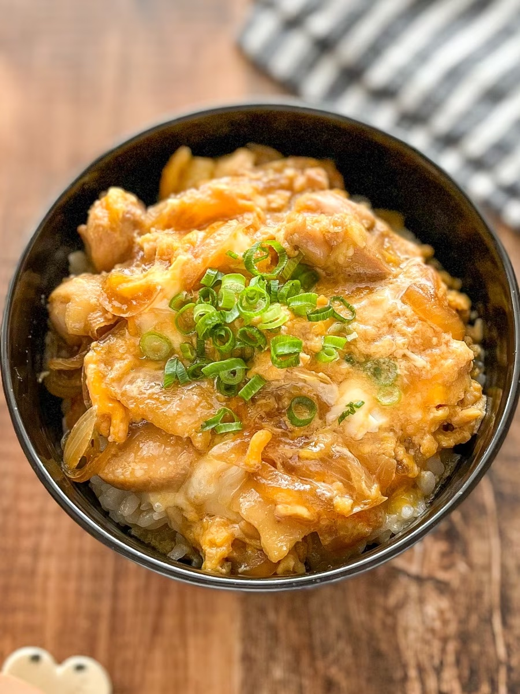

Oyakodon Recipe

Description
Oyakodon is a popular Japanese dish meaning "mother and child rice bowl." This is beacuase the dish is made with chicken (mom) and eggs (child). This is a simple but delicious recipe. I hope you try it!
Ingridients (two servings)
- Rice - 400g
- Onion - 1
- Chicken breast - 200g
- Eggs (medium size) - 2
- Salad oil - 1 tablespoon
- A. Japanese cooking oil - 2 tablespoons
- A. Mirin - 2 tablespoons
- A. Japanese dashi stock - 1 teaspoon
- A. Sugar - 1 tablespoon
- A. Soy sauce - 2 tablespoons
Steps
- Cut the onion in half, and then slice into thin slices.
- Cut the chicken into bite-sized pieces.
- Beat the eggs in a bowl.
- Put the salad oil in a frypan on medium heat, then put in the chicken.
- Once the color of the chicken changes, cook the onion slices in the pan at medium heat. Once the onions become transparent, add A.
- Cook at medium heat until the chicken is cooked through, then add 2/3 of the beaten eggs.
- Once the eggs are halfway cooked, add the rest of the eggs and cook for ten seconds before turning off the heat. That's it!